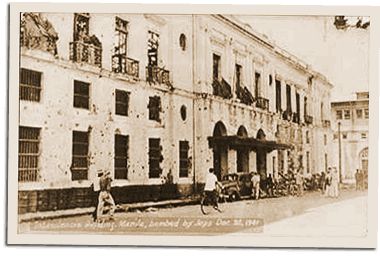

|
j
a v a s c r i p t |
December 27, 1941
Early to the office to settle two clients’ accounts in full and dispatch a long cable to Pierce. Ignored the 1200 alert after a false one at 0900, and went to the Crystal Arcade for lunch. I had just finished a sandwich at Le Gourmet when the fireworks began.

Intendencia Bldg
This time they came in force: 36 twin-engine planes cruising over the city like archangels. First they dropped leaflets — almost all landed in the Bay — then they dropped bombs aimed at the Port Area and some boats on the Pasig. The first volley on the latter hit water; the next overshot the mark and landed by the Walled City, hitting the Intendencia Building and the Santo Domingo Church — Manila’s oldest and finest. No bombs hit the Pasig boats. The closest to the Crystal Arcade, north of the Pasig, hit a few hundred meters away and scared the daylights out of everyone. It was the nearest to the center of Downtown Manila the bombs had fallen, and this on the day after our “Open City” declaration. The Japanese left us alone for the rest of the day but the fires burned throughout the night, consuming the church and its priceless historical treasures as well as a couple of nearby blocks. I took a good look at the map tonight. We’ve had no big battles and our lines are steadily moving back. If the Japanese can’t be stopped and Manila won’t be defended, we're reverting to the old war plan: a stand in the Bataan peninsula. It’s the key to the lock that opens Manila Bay: the fortress-island of Corregidor. |
|
|
|
|